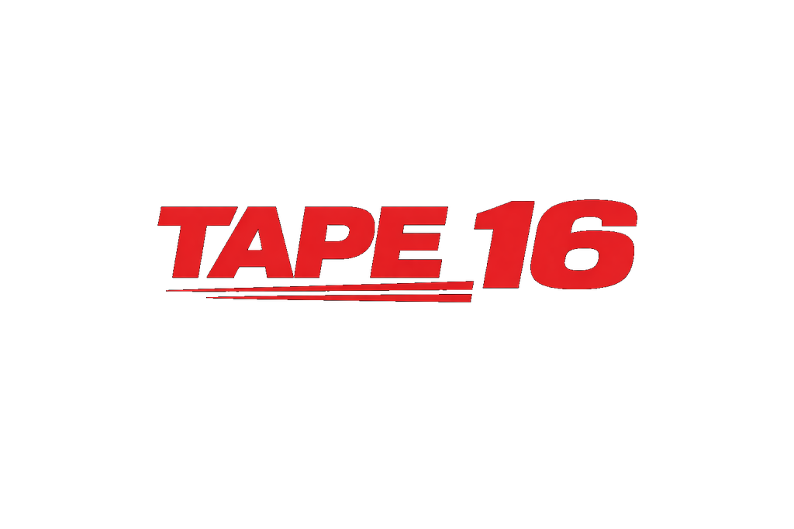
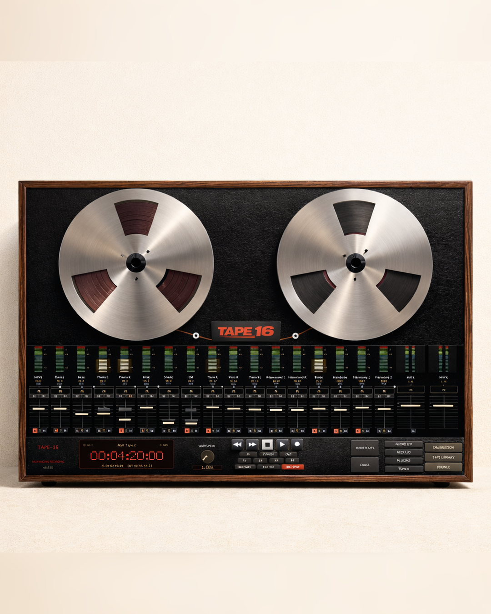

Fixed 16-track layout
Start instantly with the same dependable track layout every time, plus clear metering and direct transport feedback.

TAPE 16DAWless Tape Workflow
TAPE 16 is a 16-track tape machine built for decisive sessions. Work in a DAWless-style flow: punch in quickly, commit takes, and keep momentum with transport-first recording.

Start instantly with the same dependable track layout every time, plus clear metering and direct transport feedback.
Record behaves like tape: punch in, overwrite, and move forward. No hidden take stacks and no menu-heavy comp workflow.
Record your MIDI synths like real synths. What you play gets printed: audio only.
A focused tape-style workflow that keeps you making decisions by sound, not by endless visual edits.
Combine the old with the new: shape tracks with your favorite plugins in a hands-on tape workflow.
Shape your sound with wow, flutter, saturation, tape age, and damage controls while keeping operation quick and tactile.
Tape Workflow
If you are searching for a tape-style 16-track recorder or a DAWless writing workflow, TAPE 16 is built to keep you recording instead of over-editing.
Workflow
TAPE 16 keeps you focused on recording decisions. Arm a track, hit transport, capture the take, and keep moving.
Direct downloads for latest macOS and Windows builds from GitHub.
Minimum Requirements
These are the baseline specs for stable installation, playback, and recording.
Roadmap
Planned features currently on the list.
Pricing
Purchase the full version for $19 USD for early access users. Intel Mac users should test with the demo first before purchasing.
$19 USD
One-time purchase with full recording workflow and export options.
Secure checkout. Your serial is delivered automatically after purchase.
Buy For $19Free
Try TAPE 16 before buying. Download the latest demo build anytime.
Download DemoSign in with your serial, order ID, and purchase email to view and manage activations.